How to read the figures¶
The package draws figures to help a person check a verdict by eye. This page explains every panel, line and mark, in plain words first; the formulas are in the folded "The math" blocks, with links to the pages that explain each quantity in depth. Nothing drawn on a figure changes a status: the verdict is decided before anything is drawn. The numbers in the right column are columns of the output files; a few annotations in the data panels (the \(R^2\) of each force window in (e)) are computed for the drawing and have no column of their own.
Which figures there are¶
| figure | when it is drawn | section |
|---|---|---|
| the combined figure: one page per body and resonance, the verdict and its evidence | by default (plots=['combined']) |
MMR, secular and Lidov-Kozai |
standalone figures: evolution, recurrence, fair, portrait, cycles, angle, rate, ecc_vector, cross_spectrum, free_omega, clones |
when listed in plots |
Standalone figures |
Which rows get figures is set by the status filter plot (by default every row except a plain non-resonant one).
The file names, folders and drawing options are on the Plots page. One combined figure for every status
is in the Gallery.
Shared conventions¶
These hold for the combined figures; most hold for the standalone ones too.
- Black and gray. Gray is the osculating series, exactly as integrated; black is the same series with the short periods filtered out. When the samples are too dense to draw one by one, gray becomes a band between the smallest and the largest value.
- One color per quantity. Red is the center of the angle and the line \(\dot\sigma = 0\); blue is a fitted or model quantity; dark gray marks references (turning points, jumps, \(h = 1\)); cyan is the catalog resonant semi-major axis. The full palette: Plots.
- Time runs left to right in yr, kyr or Myr, whichever suits the span (below \(10^4\) yr: yr; below \(10^6\) yr: kyr). Time color bars use one color map (viridis without its palest yellow): dark is early, yellow-green late.
- Angles folded into one turn are labeled from 0° to 360° (270°, not −90°). The unwrapped angle of MMR panels (a) and (i) is in radians; (j) shows offsets in degrees (its kinematic version: detrended terms, in degrees).
- ▲ and ▼ at the edge of a panel mean "beyond the axis". The view holds 99 % of the osculating samples; the rare samples outside it are grouped in time, and each group is one small triangle at the time it goes furthest out (at most 8 per edge). A reference level outside the view (for example the resonant semi-major axis) is a triangle in the level's color.
- The ends of the record. A filter spreads near the ends of a record, so the analysis does not read the first
and last
FILTER_EDGE_TRIM_CUTOFFScutoff periods. In panels (c), (d), (e) of the MMR figure and (c), (f) of the secular figure, the filtered line is pale and dashed there; a filtered line that would leave the view there is a black triangle. The other panels draw their filtered lines solid to the ends: do not read them near the ends either. - No words in the panels. The panels hold only data and a few data numbers. What a line means is in the legend at the bottom of the figure; the values of the reference lines of (c), (d) and (h) are printed right of those panels.
The math: the filter and the cutoff
\(\sigma_f\) is \(\sigma\) passed forward and backward through a Butterworth low-pass filter of order
FILTER_ORDER: a period \(P\) keeps a share \(G(P)\) of its amplitude, \(G(P_c) = \tfrac12\) at the cutoff \(P_c\) and
\(G \to 1\) for \(P \gg P_c\). For a mean-motion resonance \(P_c\) is the larger of a multiple of the longest synodic
period of the angle's planets and a share of the shortest libration the analysis allows. Details:
the cutoff and
the filter.
The combined MMR figure¶

(1921) Pala in the 2:1 resonance with Jupiter, a textbook libration (Gallery). Click the image to open it at full size.
The page is 24 × 13.5 inches (taller when the right column needs it). The left half holds ten time panels (a)–(j) on one time axis and, below them, two
phase portraits (k), (l), the FAIR plane (m) and the legend. The time axis is labeled under (j) and again under (b),
so the times of the angle can be read without looking down the page. The right half explains the verdict.
With plot_options={'combined': {'figure': 'panels'}} (a figure for a paper) only the left half is drawn, without the
header and the legend, and the empty slots of the bottom row are left out (options).
The header¶
The first line names the body, the resonance key, its type (mmr2, mmr3 or mmr2 retrograde) and the kind of
orbit in the librating episodes (for example tadpole L4, horseshoe, interior asymmetric libration about 72°).
For a non-resonant or uncertain verdict whose episodes come from somewhere else it reads
episodes about X° (not this resonance). A row found as a subresonance adds subresonance of <parent>.
When another resonance or term makes the cycles, the second line names it by its role (roles):
owner: 5E-16+0+11 (librates in the episode): the owner librates and drives \(a\);driver: 3N-5+0+2 (circulates, P 4.51 kyr): forced wave: the other angle circulates, its forced wave makes the cycles;candidate driver: Xwhen the owner's measured regimes do not cover σ's deciding episode;6E-11+0+5 librates after the episode (13.7 kyr–17.9 kyr), outside it: a neighbor, a resonance the body is in before or after these episodes, not the cause (… during … but does not make σ's cyclesinside them);resonant argument: 9M-16+2+5 (one resonance 9M-16): the member of the multiplet that librates;kinematic: −4ϖ term (2ω cycle, 18 kyr); a does not follow: σ's perihelion term makes the swing, at the secular period σ's period matched;also in: 5J+6S-2+0+0-9 (both resonances at once): origin joint, the other resonance librates at the same time and keeps its own row (both resonances at once).
The next line describes the record: its span and direction, the integrator and its step, the output step and number of rows, the filter cutoff and what set it, the cutoff used for rates, the epoch, and whether the FAIR plane (m) could be drawn.
A red stamp in the top right corner, recomputed != summary, appears only when the figure had to run the analysis
again (after a restore) and got a different answer from summary.csv.
(a) The angle over the whole record¶
The resonant angle \(\sigma\), unwrapped: a circulation runs off upwards or downwards, a libration stays in a band.
(a) shows only what the status counts (the minimal policy):
- gray: the osculating angle; black: the filtered angle \(\sigma_f\); red: its slowly moving center;
- ▼ and ▲: the turning points of \(\sigma_f\) (a maximum, a minimum), marked only when there are at most 80;
- solid colored fills labeled
#1,#2, …: the counted episodes. A fill runs to a record edge the episode covers (the stretch the filter's trim hides, outside the analysis window, pale), else a quarter period beyond its first and last turning points. A hatched fill is an episode before the last jump of the semi-major axis (////); a fill hatched the other way (\\\\) is an episode another resonance induces (the header names it); - a fill labeled
leg: a counted 1:1 leg (one clean leg of a co-orbital, half a cycle, no episode row); - a faint fill with a dashed outline labeled
cand: a candidate the status did not count (an episode a measured veto rejected, as in a kinematic or induced row, the episodes of a parent row whose member librates, a leg or half-swing that is not counted), shown so the reader can judge it; - nothing else: rejected runs, runs below the period floor and runs the strength rejected are not drawn; episodes.csv
lists them (columns
counted,candidate,reject_reason) and (l) still shows the accepted ones; - a turning point inside the filter's pale edge of a 1:1 angle: a turn read on the orbit-averaged raw angle; it is added only when it closes a cycle (2006 BZ147, 960 yr);
- dotted lines (or a hatched band with "N jumps of a"): jumps of the semi-major axis; a shaded half-cycle with "action step (G2a)": a sudden change of the libration's amplitude, treated like a jump;
- 1:1 only, one episode in parts (one episode of a 1:1 angle): brackets just above the panel,
one per sub-regime, named by its well (
#0 horseshoe,tadpole L4;new amplitude: the same well after an amplitude change, the gap between two brackets is the transitional half-cycle); names that would overlap merge (#1 compound → quasi-satellite). A lighter fill hatched--labeledinferred: the stay in the co-orbital region beyond the measured turning points (episodes.csvresidence_*), up to the record's edge or a whole turn of the orbit-averaged angle. It is inferred, not measured: coverage, the edges and the status read only the turning points, and (l) does not draw it (2020 CB 1E-1: measured 443–601 yr, hatched from 601 yr to the end: 601 yr is no exit); - ×: where the analysis places the exit from the resonance. It may be only suspected: then the Caveats of the right
column say so (flag
exit_suspected,check_mmr_exitfailed).
What to look for: fills that cover the whole record are a libration; fills in part of it are episodes; faint cand
fills are librations the status does not count (the EPISODES group of the right column marks them).
The math: angle, turning points, episodes
(body without index, planets with index \(j\)). Turning points are the extrema of \(\sigma_f\) that stand out by at
least a prominence set from the noise of \(\sigma_f\). Three alternating turning points close a cycle when the angle
comes back by less than its swing (\(Q_i < 1\), cycles and their closure).
An episode normally needs at least three turning points and one closed cycle; two opposite turning points also
make one cycle when the angle and \(a\) come back to the same state on either side of them (closure by phase
return, confidence at most medium). The center is \(\sigma_f\) smoothed again over a few libration periods.
Details: turning points,
runs and episodes,
jumps and action steps.
(b) The angle modulo 360°¶
The same angle folded into one turn, in a 360° window around the center: gray dots are the osculating samples, black is \(\sigma_f\), red the center (the lines are left out when the cycles are too dense to draw). An accepted owner resonance is drawn purple dashed, an accepted subresonance orange dash-dot.
A red boxed note ALIAS step … ≈ P_σ … means that the output step is close to a multiple of the angle's own fast
period: the samples, like a stroboscope, make a fast circulation look slow
(Gallery: alias).
The strip (b′). When the cycles are too dense to see in (b), a strip below it shows about five cycles from the middle of the deciding episode on their own time axis (in yr): ● the samples, a gray dashed line the path the analysis' unwrap assumes between them (a whole turn may pass between two samples), black \(\sigma_f\). A ▼ on the top edge of (b) marks the middle of the strip's time window; a second strip (b′2) shows the last regime after a jump, and the ▼s are then numbered. A ▼ never moves sideways: next to the panel letter or the ALIAS plaque it is raised just above it, and its number moves level with the ▼ or to its left.
The math: sampling
With the output step \(\Delta t\), a rate \(\nu\) is seen as \(\nu - 2\pi m/\Delta t\) for a whole number \(m\): the sampled angle cannot tell them apart. The analysis follows the angle sample to sample with a predicted rate, so a turn per step is still counted. Details: what the step can resolve, the predictive unwrap.
(c) The rate of the angle¶
How fast \(\sigma\) moves, in units of the speed a pendulum has at the bottom of its well on the separatrix. A libration swings between positive and negative values and changes sign at every turning point; a clean circulation keeps one sign. Brief reversals do not rule out a circulation: what decides it is the center in (i), which completes a turn or keeps advancing over several. The axis is linear between −1 and +1 and logarithmic outside, so a slow libration and a fast circulation are both in view.
- red line: \(\dot\sigma = 0\);
- blue dashed: \(\pm 2\omega_0\) of each accepted episode, over its span, with the episode's own \(\omega_0\) (they need not sit at ±1, since the axis uses one reference); without an episode, a thin pair from the theoretical \(\omega_0\);
- dotted: the rate the mean motion predicts in each regime between jumps;
- ○ on the zero line: a slip, where the angle's midpoint steps by a full turn.
When no \(\omega_0\) is known at all, the panel shows \(\dot\sigma\) in rad/kyr on an ordinary axis.
The math: the separatrix speed
The black line is \(\dot\sigma / 2\omega_{0,\rm ref}\), with \(\dot\sigma\) taken at the rate cutoff \(\max(P_c, 0.1\,P_{\rm cyc})\). \(\omega_{0,\rm ref}\) is the deciding episode's \(\omega_0\), else the longest other accepted episode's, else the theoretical \(\omega_{0,\rm th} = \lvert k\rvert\, n\sqrt{3\mu_{\rm eff,th}}\), with \(\mu_{\rm eff,th}\) the resonance's effective strength (the three-body strength scale for a three-body angle; how strong must the resonance be). An episode's \(\omega_0\) comes from its cycles: a cycle of period \(P_i\) and amplitude \(A_i\) gives the small-amplitude period \(T_{0,i} = P_i / F(A_i)\) with
\(\mathsf K\) the complete elliptic integral of the first kind. For the cosine pendulum \(\dot\psi^2 = 4\omega_0^2(h - \sin^2\frac\psi2)\), so the separatrix (\(h = 1\)) passes the bottom at \(\dot\psi = \pm 2\omega_0\): ±1 on this axis. This is a cosine-equivalent scale: a well of another shape has its own separatrix speed \(\sqrt{2(E_{\rm sep} - V_{\min})}\), so ±1 bounds a libration exactly only for a cosine well. The dotted rate is \(\nu = \nu(\langle a\rangle) + k\,(\dot\lambda - n(\langle a\rangle))\) with \(\dot\lambda\) measured in the regime. Details: the pendulum.
(d) The semi-major axis¶
Three levels of \(a\) in au: light gray the osculating \(a\), mid gray \(a\) filtered at the cutoff, black a slower version that shows the resonant swing when the filtered one is a dense band (when there is no slower version, the filtered \(a\) itself is black).
- dotted: \(a_*\), where the angle would stand still; dashed cyan: \(a_{\rm res}\), the value of the resonance catalog;
- light blue band: \(a_* \pm \Delta a\), the half-width of the resonance measured from the episodes;
- red dots: the mean of \(a\) over each cycle of \(\sigma_f\) (maximum to maximum), drawn when there are 2 to 200 maxima;
- ▼
kickat the top edge (1:1): a jump of \(a\) at a change inside an episode that is no boundary, a change of well or of amplitude (episodes.csvmarks,kick@t; the jump itself is the dotted line of (a)).
\(a_*\) and \(a_{\rm res}\) are mean-motion values, while the curves are osculating. To compare like with like, both lines are moved by the difference between the mean osculating \(a\) and the \(a\) that the measured mean motion gives, separately in each regime between jumps. The margin to the right prints the unshifted values and the shift.
What to look for: in a libration \(a\) swings around \(a_*\) in step with \(\sigma\), inside the band.
The option combined.osculating_a (full, clipped, hidden) chooses how much of the osculating \(a\) stays in view
(Plots).
The math: exact resonance and half-width
\(a_*\) solves \(\nu(a_*) = 0\), where \(\nu(a) = k\,n(a) + \sum_j k_j n_j + p\dot\varpi + \dots\) and \(n(a) = 2\pi a^{-3/2}\) (yr, au). The shift uses \(a(\dot\lambda) = (GM_\odot/\dot\lambda^2)^{1/3}\). The half-width is
the median over the accepted episodes, and a libration of amplitude \(A\) swings by \(\delta a = \Delta a\sin\frac A2\). Like (c), \(\Delta a\) is the cosine-equivalent width. Details: the resonant angle and its rate, the pendulum.
(e) The response of the semi-major axis¶
Black: the rate \(\dot a\) (scaled by the power of ten in the label). Blue: the force law fitted in short sliding
windows, \(\dot a\) as a sine of the angle; the blue numbers along the bottom are each window's \(R^2\), written only
when there are at most 12 windows (close numbers merge into a range such as 0.74–0.81). For each accepted episode
a dotted line at its middle carries #id and the \(R^2\) of its two halves.
What to look for: when the resonance itself drives \(a\), \(\dot a\) follows the sine of \(\sigma\) and the \(R^2\) are high. A low \(R^2\) with a clear libration in (a) suggests that something else bounds the angle.
The blue curve is the law that decided (column rsp_force_law), on the series that law read:
single: each window's sine, evaluated on \(\sigma\) smoothed at the response cutoff; on an episode accepted in the frame of its moving well, on \(\psi = \sigma - c(t)\), as the fit read it;multiplet: one curve, the multiplet law (its one fit over its windows, drawn over them), withmultiplet law j = …: R² … (single …)at the top: the multiplet's \(R^2\) against the single sine's;harmonic(several harmonics) or a 1:1 law: no blue curve; the panel prints that law's numbers (harmonic law N=k: R² … (single …));direct_force(the direct averaged-force law): a thick black \(\dot a\) and, per window, a blue curve \(s\times\) the term's averaged force with the planet's real mass, both low-passed at the law's cutoff (\(f\,P_\text{large}\)), withdirect law 8N-13+0+5 (Neptune's mass) at 3.07 kyr: R² 0.75, s 1.14–1.29at the top. The single-sine windows are not drawn: they are the law that failed.
When the line rule raised the cutoff (a line of \(\dot a\) rivalled the force), the black \(\dot a\) and the angle are
taken at that raised cutoff, and the panel prints cutoff … yr (line … yr) (columns rsp_response_cutoff_ep_yr,
rsp_line_binding_yr). The law drawn is the one the status read: when a witness episode decided (rule R, column
rsp_force_source = witness), its windows and law, on \(\sigma\) and \(\dot a\) smoothed at its own response cutoff
(rsp_response_cutoff_ep_yr, which can differ from the record's); otherwise the fit pooled over the episodes.
The math: the force law
In each window of about 3.5 cycles,
fitted as a linear model in \(\sin\sigma_f\), \(\cos\sigma_f\) and 1. Lagrange's equation gives this law for a resonance with one dominant term. Details: the force law.
(f), (g) Eccentricity and inclination¶
Gray the osculating value, black the filtered value, \(i\) in degrees. The gray numbers in the top left corner are the smallest and largest filtered values in the analyzed window.
(h) The energy of each cycle¶
One point per cycle of \(\sigma\): its energy \(h\) in the pendulum fitted to the angle, on a logarithmic axis. \(h = 0\) is the bottom of the well, \(h = 1\) the separatrix (dashed).
- ● a libration cycle, ○ a revolution (a full turn);
- light blue band: the separatrix zone, where trial orbits in the fitted potential may stay trapped or go over the top: a cycle there can cross the separatrix;
- triangles at the bottom or top: \(h\) below \(10^{-3}\), or no top to the potential.
What to look for: a deep libration sits well below 1; points in or near the band mean the orbit is at the border of the resonance.
The math: energy and the separatrix zone
The potential \(V\) is fitted to \(\dot\sigma^2 = 2E - 2V(\sigma)\) cycle by cycle; each cycle's energy is
The zone \([h_{\rm lo}, h_{\rm hi}]\) comes from trial orbits in the fitted potential. With two harmonics a well's own separatrix can lie below \(h = 1\). Details: energy and potential, the separatrix zone.
(i) The center of the angle¶
Gray: \(\sigma_f\) in the analyzed window; red: its center, \(\sigma_f\) smoothed over a few libration periods; large
red ▼▲: turns of the center; light red shading: the center's longest one-way run, drawn only when it reaches a full
turn. Red vertical hatching labeled slow #id (or slow): the intervals of the slow scale, a slower libration of
the center stored apart from the main one (its period, cycles and cause are the slow_* columns and the SLOW SCALE
group of the right column); nothing is hatched without a slow swing.
What to look for: a center that runs a full turn one way is a circulation, however the angle swings around it.
The math: the center
\(\sigma_c = \mathrm{lowpass}_{W_c}(\sigma_f)\) with \(W_c = 3P_{\rm cyc}\) (LIBRATION_CENTRE_CYCLES), and the
center's turns are found with a larger prominence than those of \(\sigma_f\). Details:
the center and circulation.
(j) The centers of related angles¶
Each line is the center of an angle minus its mean, in degrees, with its key at the right end: red the catalog angle, pale colors other members of its multiplet (the same commensurability with other perihelion terms), orange an accepted subresonance, purple dashed the owner resonance.
What to look for: a flat line is the angle that librates. If the catalog angle wanders while a member's line is flat, the libration belongs to that member.
When the slow scale's cause is a secular cycle (slow_cause 2ω or \(g - g_j\), at any level), the panel adds
\(p\varpi\) of that scale, detrended, orange dashed, labeled with \(p\) and the secular period from its column
(−9ϖ 7.11 kyr): the line that would explain the slow swing of the red center.
For a kinematic libration (or a non-resonant row whose slow scale is a secular cycle) the panel shows instead
\(\sigma = (\lambda\ \text{part}) + p\varpi\) on the scale of that swing, in degrees, each term with its straight-line
trend removed: red \(\sigma\), orange dashed \(p\varpi\) with its secular period (−4ϖ 18 kyr), gray dotted the
\(\lambda\) part. The scale is the deciding episode at its response cutoff (285637: the 18-kyr cycle at 1.8 kyr), or
the slow scale, detrended over each slow episode (37087: 506 yr). When \(\sigma\) follows \(p\varpi\) and the \(\lambda\)
part stays flat, the perihelion's own precession bounds the angle, not the resonance; compare the swings, not the mean
rates.
The math: the members' centers
A member \(\sigma_s\) differs from the catalog angle \(\sigma_0\) by perihelion terms, \(\Delta_s = \sigma_s - \sigma_0\), computed from the smoothed \(\varpi\) of the body and the planets; its center is drawn as \(c_s = c_0 + \mathrm{smooth}_{W_c}(\Delta_s)\). Details: subresonances, another resonance owns the oscillation, kinematic origins.
(k), (l) Phase portraits¶
(k) is the whole record, (l) the accepted episodes (title (l) episodes, counted solid: the five longest, the
counted ones first, each in its episode color, up to 12 cycles each, a dot at its first sample). A counted episode is
solid; an accepted run the status does not count is dashed and labeled #3 cand (a candidate, faint in (a)),
#3 not counted, or by what it is: #3 wave, #3 forced (strength), #3 ripple. #2 induced is an episode
another resonance induces. (l) draws each episode over the same interval as its fill in (a), cut to the
window of (k): solid between its first and last turning point, dashed beyond them. An episode that covers the whole
record is the whole window, so its (l) holds the same samples as (k). Both show \(\sigma_f\) (modulo 360°) against \(\dot\sigma\) in rad/kyr, with the same
scales; color is time in (k). Red line: \(\dot\sigma = 0\); red +: the center of each accepted episode.
What to look for: a libration draws closed loops around the +; a circulation draws a band across the whole width. A frame crossed out says why the samples cannot be drawn (an aliased step). When (k) is much wider than the episodes, it uses the episodes' view and marks the clipped part with ▲▼.
(m) The FAIR plane¶
The mean anomaly \(M\) against the longitude difference to the planet, colored by time (Forgács-Dajka, Sándor &
Érdi 2018). A libration draws slanted bands with empty gaps between them, since the body avoids some phases
relative to the planet; a circulation fills the square over time. It is drawn only for a prograde two-body angle, with the planet's longitudes saved and an output step of at
most 1/4.2 of the orbital period. Otherwise there is no (m) frame: the header says FAIR no (reason), the legend
takes the slot, and one orange line at its top gives the reason in words, e.g. FAIR not drawn: planet longitudes
not saved (SAVE_PLANETS); for a 1:1 FAIR = (M, σ) repeats (b) (for a 1:1, \(q = 0\): the plane would only show
the range of σ again).
The math: FAIR coordinates
\(x = M \bmod 360°\), \(y = (\lambda_P - \lambda) \bmod 360°\) for a body inside the planet's orbit and \((\lambda - \lambda_P) \bmod 360°\) for one outside.
The right column¶
The right column states the verdict in ten blocks. The blocks come in the same order and the same place on every figure: MMR, co-orbital, secular and Lidov-Kozai. The left half of the column holds the header, subtitle, key facts, Why, Confidence and Checks; the right half always starts with Evidence, then Caveats, Numbers and the footer, so that figures leafed through in a batch show each block at one place. Read it top down like a short report: the verdict, what is seen, why, how firm, then the checks, the evidence and the numbers. Every number is a column of the output files or a ledger value. Codes (rule IDs, column and flag names) appear only as small gray tags and in the footer.
Icons and colors. One set of icons serves the checks, the pills and the evidence. The color says how closely to look, not whether the row is for or against the resonance.
| icon | meaning |
|---|---|
| ✓ (green) | clean: passed, or the input is in its best state |
| ⚠ (amber) | marginal: passed near its threshold, or the input that holds the level |
| ✗ (red) | failed: a measured objection |
| ? (gray) | not measured (a gap) |
| – (light gray) | not needed, not applicable, or shown for reading only |
| ◆ (status color) | the one step that set the status |
The status colors are the same in the plaque, on ◆, on the status words in the text and on the clone figures: resonant
green, transient orange, near_separatrix purple, non_resonant gray, uncertain blue, invalid red (style.STATUS_COLOURS).
Gray monospaced numbers in parentheses back the statement before them. Gray letters in parentheses, such as (a, b),
name the panels that show it.
-
Header. The status word on a plaque in the status color, then the level as four dots (
●●●○ high;no levelfor uncertain and invalid), then one action chip. The chip takes one of five forms:no action needed(gray);glance at (b), (i)(amber, actionspot_check): the panels of the inputs that hold the level (the map is below);review figure + numbers(red);extend to 200 kyr(blue), always with the length (extend_to_years);resample to 0.5 yr(blue), with the step (resample_step_yr).
The action appears only in the chip; the text never repeats it.
-
Subtitle. The resonance and the subtype in words, for example
its own libration over the whole record,induced: borrowed from 5E−16+0+11,kinematic (forced) libration of the backgroundortoo short to decide: slow swing in the well. Under it, in gray, come the type (two-body, Jupiter 2:1 (period ratio 1:2), order 1: the ratio of mean motions n : n_planet, then the period ratio, which the outer-belt literature uses;three-body Mars–Jupiter, order 1) and the step that decided (decided at step 6 (behavior)). When a check showed the angle's own force, the line also names it (own force shown by the potential). -
Key facts. Five to seven
label valuelines:- σ: the share of the record it librates, its episodes, how it ends and the angle word;
- the libration: period, median and largest half-amplitude, and center;
- the episodes, when there are several, with ◆ on the deciding one (
#1 61.3–99 kyr P 8.62 kyr A 92.4° (139°) ◆); - the driver of an induced row, otherwise the resonance (a_res, mean a, order);
- the orbit: the e and i ranges, q_min and Q_max;
- the radial overlaps with the eight planets' bands. An overlap is needed for an encounter but is not enough for one;
- the run: span, output step and cutoff.
-
Why. Three to five plain sentences in a fixed order:
- what is seen, with panel letters;
- what it means: whose force makes the cycles, or why they are not this resonance's own;
- what was ruled out. Only measured tests count here;
- what holds the level.
The package's terms keep plain glosses:
- induced:
borrowed from X, where X is the owner; kinematic (forced) libration: σ is bounded by X, not by this resonance's force;overruled by X: a veto.
A forced-wave veto says that σ circulates and that its short runs are the background's forced wave (2012 KL9). The last sentence says what limits the level (
The confidence stops at high: …), orNothing limits the confidence.When the code computed one, a last line follows:Needed: …for an uncertain or invalid row, elseWould change the verdict: …,Next check: …(an extension that tests, with no promise) orA longer record cannot make it resonant: …. For 79653 3M+3J-7, σ circulates during 32.5–61.3 kyr, so the row stays transient. -
Confidence.
Confidence: high — not certain because …names the inputs that hold the level. Then comes one pill per input of the level, as the minimal policy read it (columnpol_level_inputs):- ✓: the input is in its best state (
4.12 cycles counted (…; ≥ 3 allows certain),alternatives ruled out,own force shown (potential)); - –: the input is limited, but another input holds the level lower. The pill says where the input alone would cap
the level (
… — alone it would cap the level at high); - ⚠: the input holds the level (
filter-sensitive,close to the separatrix,overruled by the kinematic bound (by a thin margin)); - ?: the input is not measured, and that holds the level (
separatrix margin not measured); - ✗: a measured objection the level reads, named by its check (
objection: σ̇ does not follow a (identity fails), columnpol_objection_check).
N, the cycles counted, is (turning points − 1)/2 of the deciding episode plus its covered edges in periods; the core pill counts the same episode without the edges. A bar says which level it opens (
high needs ≥ 2). The former caps that the level still reads are pills too: a second capture not ruled out, a candidate episode, a thin veto, the filter, a gate without a verdict. An uncertain or invalid row readsConfidence: no level —, then what is missing, each item a ? pill. - ✓: the input is in its best state (
-
Checks. The steps of the status tree as questions. Each step has a short answer, gray numbers and a small gray rule ID (names).
Q · Can the data show it?comes first: the output step, the filter, aliasing and the record length. The tree's steps follow:0 · Does σ librate?;1 · Does a sibling angle hold the center?;2 · Does another resonance drive a?;3 · Does a (semi-major axis) swing with σ?;4 · Does the center drift without a cause?;5 · Is it σ's own force?;6 · How does σ behave?.
A circulation leaf (C, C5, G4c, G4h) is step
C. Each margin hangs under the step it belongs to:step Q 0 1 2 3 5 6 margins L8, C5 N, C1–C4, L1, L6, L7 S W L3, K1, K1e, B5 L4, R0, F, L5, O1 L2, Z A sub-check whose printed comparison fails is named by what was measured (
center moves (shift/amplitude 5.77 > 0.5),the output step is too coarse for σ), never by the passing condition;Qthen answersPartly:(⚠) orNo:(✗) with those words. The deciding step carries ◆. Any other step shows its worst sub-check (✗, then ?, then ⚠; a ✗ that the step's answer does not read is named in it,…; but dσ/dt ≠ c (a − a*) (below)); ✓ means it was answered cleanly, ? that it did not run (a gap), – that it was not needed or does not apply. The steps after the deciding one collapse into one quiet line (3–6 · a swings · drift · own force · behavior — not reached). The margins measured anyway hang under that line.When the minimal policy, not the tree, set the status (
pol_decided_byother thantree), the ◆ moves to a last line, for exampleP · Is it the background's forced wave? Yes → NON-RESONANT. The tree's leaf then readsoverruled: the policy decides at step Pand shows its own result: ✗ when a check it read fails (or the policy did not uphold its veto), ? when neither the force law nor the potential was measured.The three-body strength from the scale μ_i μ_j e^q is a gray – line:
scale only (×39.5; an objection only from ×10³ after small divisors). The level does not read it. -
Evidence. The physics, one row per test (icon, short label, value), in two groups:
is this X's own pendulum?: the period, strength and width in a that the cycles need, against what the averaged potential gives (on a co-orbital, the 1:1 force law);what makes the cycles?: the owner search and its best candidate, the identity σ = φ/u + Ψ/u of an induced row, a forced wave, andboth resonances at once?. That last row asks whether σ is held by its own term too while the owner pins φ. Its answers areexcluded,not ruled outorboth resonances at once.
-
Caveats. The sentences a reader must know before using the verdict. They come from the flags through one table (
verdict_vocab.FLAG_CAVEATS: a flag, the statuses it is said on, its sentence). Examples:episodes_in_separatrix_zoneon a transient row,exit_suspected,last_regime_after_jump,a_short_period_scatterandstrength_scale_only. A failed check that the level does not read is said here, with its numbers and the reason it is not read (79653: the three-body strength scale). A flag that is an input of the level is a pill, not a caveat. A diagnostic flag goes only to the footer. The block readsnonewhen there is nothing to say. -
Numbers. The block opens with the framed DECISIVE lines: the comparisons of the rule that set the status, with its ID (
energy fits the potential [R0]: …). The lines also say in words which tests limited the level, conflicted with the verdict or were not measured (not measured: a obeys the force law [L4]: …). Fixed groups follow, labeled in words with units:- EPISODES: ◆ marks the deciding episode; accepted runs the status does not count say
not counted; ✗ marks the rejected runs, with their reason; - LIBRATION;
- RESPONSE OF a;
- PENDULUM, ENERGY;
- RESONANCE;
- ORBIT (min / med / max);
- REFERENCE PERIODS: synodic, orbital, secular and great-inequality periods, to name a period seen on σ;
- KINEMATICS;
- SLOW SCALE;
- SUBRESONANCES, DRIVER;
- STEP, FILTER.
The secular and Lidov-Kozai columns keep this order with their own groups (LIBRATION, the gate or the response, ORBIT, FREQUENCIES where the MMR column has REFERENCE PERIODS, STEP, FILTER last).
A number is printed wherever it is needed; there are no pointers to other blocks. A gray
(not used)number belongs to a test skipped by design. The pendulum labels name the source of each number:observed cycle period Pis measured on σ;small-swing period T0 (from observed cycles)is inferred from those cycles (T0 = P/F(A); never a theory), and so are the well's half-width and μ_eff;cycle energy his normalized to the fitted potential.
- EPISODES: ◆ marks the deciding episode; accepted runs the status does not count say
-
Record (the footer). The raw codes, small and gray, in this order:
- the status code;
- the leaf and the angle rule (
leaf G6 · angle rule G5w); - reason, origin, origin detail and veto;
- the policy step that decided (
decided by tree); - the flags;
- the settings hash;
- the docs pages.
The panels of the glance at chip come from one map, from the input that holds the level to its panels
(verdict_vocab.GLANCE_PANELS). The chip names at most three letters, in panel order. A ZLK co-orbital of a planet whose modes the free elements do not fit (gate detail coorbital_unfitted_forcing)
points V at (a), (d) instead: its free ω and free e vector are no measurement.
| input that holds the level | MMR panels | secular/ZLK panels |
|---|---|---|
| N (cycles), core (own cycles of the deciding episode) | (a), (l) | (a) |
| M (separatrix margin) | (h) | (h) |
| S (filter stability) | (b), (i) | (b), (h) |
| V (objections, alternatives) | (e), (j) | (g), (j) |
| F (own force) | (e), (h) | — |
| veto | (j) | (g), (j) |
| thin veto | (j) | (g) |
| second capture | (j) | — |
| candidate episode | (a) | (a) |
| circulation | (b), (i) | (b), (h) |
| table (a level the rule fixes) | (j) | (a) |
| status (near_separatrix) | (h) | (h) |
When the column is long, the figure grows downward by up to COLUMN_MAX_GROWTH_IN (6 in) over its 13.5 in, and
the left panels keep their place at the top. Past that limit the column trims in this order:
- the Numbers groups, from the last (DECISIVE and ORBIT stay);
- the ✓ sub-checks of each step, into one line;
- Evidence, to one line per row.
Nothing else is dropped. The text export is always complete. verdict_column_mmr.figure_column(analysis, rows,
settings) returns the column the figure draws; for secular and Lidov-Kozai rows it is
verdict_column_long.figure_column(analysis, row, free_elements, settings). verdict_column.column_text(column)
writes that column as text, block by block.
With plot_options={'combined': {'numbers': 'all'}} the right column lists every number of the decision in blocks
instead of the ten blocks.
Co-orbital (1:1) figures¶

2002 AA29, an Earth co-orbital: horseshoe, a compound orbit, horseshoe again (Gallery).
The figure is the same, with these differences:
- the header names the regime (
tadpole L4,horseshoe,quasi-satellite,compound (horseshoe ↔ quasi-satellite)), or for one episode in several wellsorbit: …, the wells of its sub-regimes in time order (orbit: horseshoe → tadpole L4, 2016 JA; more than four are shortened with…and their count; summarygeo_orbit_type_sequence); - (a) holds a hatched gray strip at its foot labeled
bounded, not counted (audit)where the coverage audit found a bounded run of the orbit-averaged angle that no counted episode covers (flaguncovered_bounded_run, columnsaud_unc_*; the row is in the review queue, its status unchanged); - (a) brackets the sub-regimes and hatches the inferred residence, and (d) marks the kicks of \(a\) (above). The
EPISODES group of the right column lists the stay under the episode (
stay start–end (inferred)) and the marks (well 339 yr,amplitude 326–446 yr,kick 4.69 kyr;no well 856–929 yrfor the cycles of an episode beyond its well-holding core, rulecoorbital_well_core: 2024 JR16 clones); - (e) draws no sine windows: a co-orbital is judged by its own force law, and the panel prints its \(R^2\) (with the two halves) and \(K/K_{\rm th}\), the fitted strength over the planet's (1 means the planet's own mass);
- in the right column, Evidence names the 1:1 force law,
what makes the cycles?is left out, and step 2 says that the owner search does not apply to a 1:1 angle; - the Confidence pill of the separatrix margin (M) reads the separatrix zone of the counted episode, not the L2 row,
because a horseshoe's half-amplitude near 180° is its topology. So the pill can read
clear of the separatrixwhile L2 shows ? (2002 AA29); - FAIR is drawn when the output step allows it.
The math: the co-orbital force law
with \(\tilde F\) from the averaged direct and indirect potential of the planet. Details: co-orbital force law, co-orbitals.
The secular and Lidov-Kozai figure¶

(1222) Tina in the ν6 secular resonance (Gallery).
The page and the right column follow the MMR figure, but the time panels are fewer and their letters differ ((d) is \(a\), before \(e\)).
The header gives the span, step, number of rows, the cutoff \(P_c\) and what set it, and the scale the verdict rests
on (fine, or center when the slower center scale decided). A Lidov-Kozai figure adds the plane \(\omega\), \(i\) and
\(\Omega\) are measured from (ω, i, Ω from the invariable plane, ZLK_ANGLE_FRAME): (a), (a′), (f) (labeled
i (invariable)), (g) and (i)–(l) all read that frame, the free elements included. Below the time panels are four
squares, (i)–(l), and under them the legend in two columns (the page is 1.45 in taller than the MMR one; the paper
figure has no legend, leaves an empty square out and letters the rest on from (i)).
| panel | what it shows |
|---|---|
| (a) | \(\sigma\) in degrees: gray the angle the classifier reads (the reduced proper angle by default), black the angle filtered at the scale the verdict rests on, a thin gray line the angle at \(P_c\) when the center scale decided, red the center, ▼▲ turning points, fills the counted episodes, faint dashed cand the candidates, other runs not drawn (as in MMR (a)) |
| (a′) | Lidov-Kozai, an induced libration only (attributed to a forced mode, or a center whose slow line is a beat of the forced vector): \(\omega_f\) with the forced direction against the node and the dominant mode against the node (below); other rows have no (a′) and keep the eight panels in place |
| (b) | \(\sigma\) modulo 360° around the center: gray dots and black \(\sigma_f\) |
| (c) | \({\rm d}\sigma_f/{\rm d}t\), in ″/yr for a secular angle and °/kyr for Lidov-Kozai; red line at 0 |
| (d) | \(a\) (au): gray osculating, black filtered at \(P_c\), with min – max; when the median \(a\) lies in a planet's co-orbital zone, \(\lvert\langle a\rangle/a_P - 1\rvert < k\,(m_P/3M_\odot)^{1/3}\) (ZLK_COORBITAL_HILL_FACTOR \(k\)), the planet's \(a_P\) dashed and the zone's edges dotted, named top right (for drawing only: a Jupiter Trojan gets the lines too) |
| (e), (f) | \(e\) and \(i\) (degrees): gray osculating, black filtered at \(P_c\), with min – max |
| (g) | secular: the rate of the element the angle contains against a sine of \(\sigma_f\) (below); Lidov-Kozai: the drift of the free and the osculating \(\omega\) in turns (below) |
| (h) | the center of \(\sigma_f\), its turns, and its longest one-way run when it reaches a full turn (as MMR (i)) |
| (i) | the portrait \((e\cos\sigma, e\sin\sigma)\) of the unfiltered angle and \(e\), or \((\sin\frac i2\cos\sigma, \sin\frac i2\sin\sigma)\) for an angle of \(\Omega\) alone; color: time; red + at the origin |
| (j) | secular: \(\sigma_f\) against \({\rm d}\sigma_f/{\rm d}t\); Lidov-Kozai: the free eccentricity vector, or \(\sigma_f\) against its rate when the free elements were not built (the axis labels say which) |
| (k) | the Charlier portrait \((R\cos\sigma_f, R\sin\sigma_f)\): \(\sigma\) and \(e\) filtered at the cutoff the verdict rests on (\(P_c\), or the center scale's), inside the filter's window, \(R = \sqrt{2(1-\sqrt{1-e_f^2})}\); for an angle of \(\Omega\) alone \(R = \sqrt{2\sqrt{1-e_f^2}\,(1-\cos i_f)}\) (labeled R(e, i)); color: time; red + at the origin |
| (l) | the same over each episode of (a) (the counted ones and the candidates under the minimal policy), in its color of (a): ○ its start, solid between its first and last turning point, dashed beyond them and for a candidate; at most the five longest |
What to look for: in (a) a libration needs at least three turning points, one full cycle
(LIBRATION_MIN_TURNING_POINTS); a drift is a ramp of less than a turn; a single U is half a cycle; circulation is
a ramp of several turns. In (i) a libration draws loops around the resonance center: a ring off the origin, or a
crescent when the libration is wide and the center close to the origin. A ring around the origin is circulation.
(i) mixes every regime of the record and every short wave of \(e\); (k) shows the same plane without the waves the
filter removes (Carruba, Aljbaae & Winter 2016, Fig. 3B), and (l) one episode at a time: an episode whose curve goes
round the origin is not a libration of this angle. \(R\) is the momentum conjugate to the angle in units of
\(\sqrt{L}\), \(R \approx e\) (or \(2\sin\frac i2\)) for small \(e\) and \(i\). These panels change no status.
(g) for a secular angle. Black is \(\dot e_f\) for an angle with \(\varpi\), or \({\rm d}\sin(i_f/2)/{\rm d}t\) for an
angle of \(\Omega\) alone (both, \(i\) dashed on a right axis, when the angle has both); blue is the fit
\(A\sin\sigma_f + B\cos\sigma_f + C\), with its \(R^2\) written in blue. That \(R^2\) is a column of the output and changes
no status. Black, blue and \(R^2\) are one fit, the analysis' own: the element and \(\sigma_f\) filtered at the decisive
cutoff, on its window. When the center scale decided (header scale center) that cutoff is the center's, longer
than the \(P_c\) of (e) and (f), and the panel says at the center scale … kyr after the \(R^2\).
(g) for Lidov-Kozai. The drift of \(\omega\) from its first value, in turns (as the standalone
free-ω drift figure), with a legend: gray the osculating \(\omega\), blue the free \(\omega\)
with the forced terms of the planets removed; the free \(\omega\)'s net turns are written top right (the panel says
free elements not built when there are none). A free \(\omega\) that winds through full turns while the osculating
one stays near zero points to a kinematic libration: the planets' forcing holds \(\omega\), not the Lidov-Kozai
mechanism (591986: 83 turns; Gallery: kinematic); one that stays within a
fraction of a turn supports Lidov-Kozai. The picture is not the verdict: the right column states the free-ω gate's
outcome (confirmed, kinematic or no verdict) with \(T/P_{\rm cyc}\), the cycles of the osculating \(\omega\) in the
record, and the minimum needed. Too short a record, an undefined phase, a planetary frequency left in the free
elements or a co-orbital of Mercury to Mars give no verdict, and an angle that does not librate throughout is demoted
only under the extra condition \(\rho_{\max} < 1\) (the free-ω gate). Without a
verdict the angle's shape decides (flag gate_unavailable) at most at medium, unless the forced terms are small and
the \(e\)–\(i\) integral holds in the deciding episode (flag kinematic_excluded: 1981 Midas is certain).
(a′) for an induced Lidov-Kozai libration. Gray \(\omega_f\); orange \(\arg z_{\rm forced}(t) - \Omega(t)\), the direction of the fitted forced eccentricity vector against the node: the point the free circle turns about, so \(\omega_f\) oscillates around it with the free–forced beat (\(P_{\rm cyc}\), written bottom right), and it carries the beat of the forced modes (the legend names the two largest \(|c_j|\) and their beat: 591986, g5 + g6, 54 kyr); purple dashed \(\varpi_j - \Omega\), the longitude of the dominant mode against the node, with the node lock when there is one (591986 over 4 Myr: locked to g5, 50–130°, a slow wave of 1.4 Myr) or the rate \(\dot\Omega - g_j\). A libration of \(\omega\) that follows the orange curve is the forcing's, not the Lidov-Kozai mechanism's. When the curves leave a turn (624 Hektor: \(\omega\) circulates between its episodes, the center \(\varpi_5 - \Omega\) turns with the node) the panel is drawn modulo 360° about the forced direction, and \(\omega_f\) only inside the librating episodes.
The right column has the ten blocks of the MMR figure (the right column), with these differences:
-
Subtitle and Key facts. They name the angle, its period and amplitude, and, for Lidov-Kozai, the free ω (g − s) with its net turns in the record and the forcing mode (|c|, e_free/|c|). The orbit line gives i in the invariable plane. The run line names what set the cutoff. A secular row does not name an origin, because no force test exists there by construction. A Lidov-Kozai row says it in gate words: confirmed, no verdict, or the free ω winds.
-
Checks. The steps are:
Q · Can the data show it?: the filter guard (SZ.F). An unphysical orbit is decided here (INVALID, e reaches 2.11 > 1: 2010 HY22);0 · Does σ (ω) librate?: the turning points (SZ.N), a stationary center (SZ.S), a circulating center (SZ.P) and a center that turned back (G5s);- secular step 1,
Does its center librate at the slower center scale?; - secular step 2,
Is the swing larger than the error of the mode phases?(G5p): the swing against the uncertainty of the linear mode phases; - Lidov-Kozai step 1,
Does the free ω librate too?: the free-ω gate (SZ.G), with its cycles, the free e against the forced e, the forcing's beat, a node not yet separated from s_j, and a co-orbital the free elements cannot fit; - Lidov-Kozai step 2,
Do e and i trade as a ZLK cycle in the deciding episode?. It carries ◆ when the veto zlk_integral decided; P · Is the record long enough?when the policy decided a record too short for one cycle (pol_decided_byinsufficient_time):No, but σ_f ends in circulation → NON-RESONANT, with the range σ_f spans to the end in turns. Below 1 +CONFIDENCE_THIN_BANDturns it addsat most medium(pillends in circulation by a thin margin of one turn). Step 0 keeps itsNot yetand addsthe policy decides at step P.
The gate decides only when it gives a verdict, confirmed or kinematic. Without one, the shape decides, at most at medium (a pill, flag
gate_unavailable), unless the forced terms are small and the e–i integral holds in the deciding episode (flagkinematic_excluded: 1981 Midas is certain). The margins N, S, F, P and G (secular and Lidov-Kozai margins) hang under their steps. -
Evidence. A Lidov-Kozai row asks
what holds ω?. Its rows are:- the forced vector and its mode cluster;
- the center's slow wave (591986: 53.8 kyr, the g6 − g5 beat);
- the node lock;
- the e–i coupling over the record (
zlkantiphase at the constant-H amplitude, orforced beat; coupling is not libration).
A secular row asks
what makes the cycles?. It answers with the period seen on the angle, matched against the FREQUENCIES rows within the resolution 1/T (≈ g − g5, orunidentifiedwith the nearest row), the mean rate of σ and the center's wave. What these mean: Free elements: beyond the gate. -
Caveats. The flag table of the MMR figure, plus the long-period sentences:
- a libration that rests on three turning points;
- a gate that needs a longer record;
- only one independent center estimate;
- a failed e–i exchange that the level does not read;
- a forcing fitted as a cluster of modes.
The secular e-response check (\(e\) or \(\sin(i/2)\) against the angle, panel (g)) is not a caveat. Until its role is decided, it appears only in Numbers and in the footer.
-
Numbers. The groups are, in the MMR column's order:
- LIBRATION OF σ (or ω), for the deciding episode;
- FREE-ω GATE (Lidov-Kozai): the outcome, the cycles of ω (T/P_cyc) against those needed, the period read, ρ_max, and the e–i coupling over the record and in the deciding episode;
- RESPONSE OF e AND i (secular): a column that no status reads;
- ORBIT (min / med / max), with a in au;
- FREQUENCIES (below);
- STEP, FILTER: span, step, \(P_c\), scale, and what set the cutoff.
The FREQUENCIES table lists rates in ″/yr with their periods \(1\,296\,000''/|f|\) (the time a rate needs for a full turn). Use it to name the periods seen on \(\sigma(t)\):
- secular: the body's \(g\) and \(s\) (the mean rates of its free vectors), \(\sigma\)'s rate from them and the modes,
the modes g5, g6, s6 and those of the angle (
in σ −1: the mode and its coefficient), and for an angle of two or more modes the forced waves \(g - g_j\), \(s - s_k\) (2306 \(g-g_6+s-s_6\): 43.9 and 43.6 kyr); - Lidov-Kozai: the free rates \(g\), \(s\) and \(g - s\) (the free \(\omega\)), every fitted forced mode with its amplitude
\(|c_j|\) (◀ the mode that holds \(\varpi\)), the beats \(g - g_j\) of the two largest forced modes (
kinematic: the cycle of a kinematic \(\omega\)), their mutual beat (beat: the slow wave of the forced vector) and, when flagged, the node lock \(\Omega - \varpi_j\) with its period and range. 591986 over 4 Myr: g5 304 kyr |c| 0.045 ◀, \(g - g_5\) 6.11 kyr kinematic, g6 − g5 54 kyr beat, \(\Omega - \varpi_5\) lock 1.4 Myr 50–130°.
The planetary rates are the package's constants (PLANETARY_FREQUENCIES), the body's are measured on the record:
their precision is about one turn over the record, \(1\,296\,000''/T\).
The math: the secular angle and the free ω
A secular angle combines the body's proper longitudes of perihelion and node with the planets' mode phases, \(\sigma = p\varpi + q\Omega + \sum_j(p_j\ell_{g_j} + q_j\ell_{s_j})\), on the body's vectors with the forced terms at the other planetary frequencies removed (the secular angle). The cutoff is the largest of the great-inequality term, the forced waves near the angle's frequency and half the shortest libration allowed (secular signal).
For Lidov-Kozai, \(z_e = e\,e^{i\varpi}\) and \(z_i = \sin\frac i2\,e^{i\Omega}\) are split into forced parts (fitted at the planets' frequencies) and free parts, and \(\omega_{\rm free} = \varpi_{\rm free} - \Omega_{\rm free}\) (what is computed, the gate, why a bounded ω is not enough).
Standalone figures¶
Each kind below is drawn when it is listed in plots. The examples are drawn by the package from the saved
benchmark series.
evolution¶
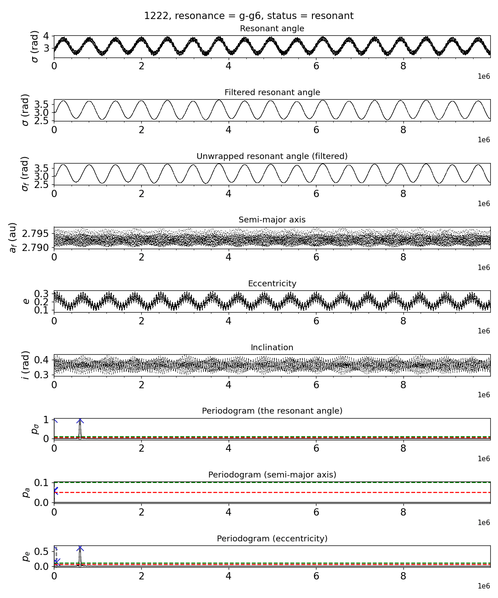
Stacked panels (preset PLOT_CONFIG, full by default): the angle as integrated and filtered (wrapped and
unwrapped, radians), the filtered \(a\) (au), \(e\), \(i\) (radians), then Lomb-Scargle periodograms of the filtered
angle, \(a\) and \(e\). The time axes are in years; the periodograms are drawn against period, from 0 to the length
of the record, not against time. Blue × marks a peak, gray dashed lines its width; the red and green dashed lines
are the power levels 0.05 and 0.1. The semi-major axis here is smoothed by the body-level filter
(LIBRATION_FILTER_CUTOFF: by default periods shorter than 2000 yr are removed), not at the analysis' cutoff.
recurrence (MMR)¶
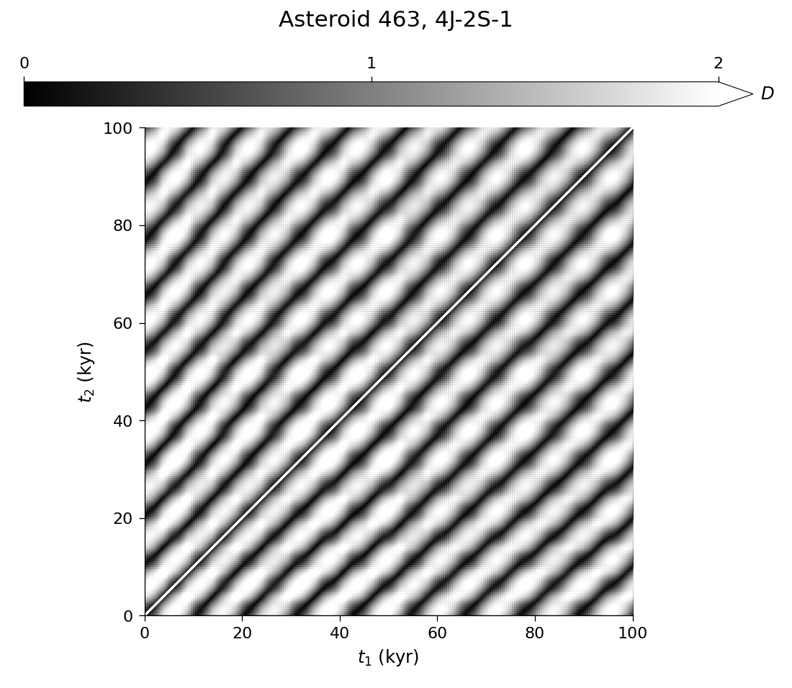
Each pixel compares the state of the angle at two times \(t_1\) and \(t_2\): dark means the angle and its rate are almost the same at both times. A libration gives a pattern of dark diagonal stripes, one per period, as here for (463) Lola (period about 10 kyr); a circulation never returns to a state it left, so it stays light away from the diagonal. The white band along the diagonal is left out on purpose.
The math: the recurrence distance
on the unwrapped \(\sigma_f\), with \(s_\sigma\) half the median diameter of a cycle and \(s_{\dot\sigma}\) half the 5–95 % spread of \(\dot\sigma\). These are the object's own scales: D compares states within one figure, not between objects. The matrix is thinned to about 8 samples per cycle (700–2500 points).
fair (MMR)¶
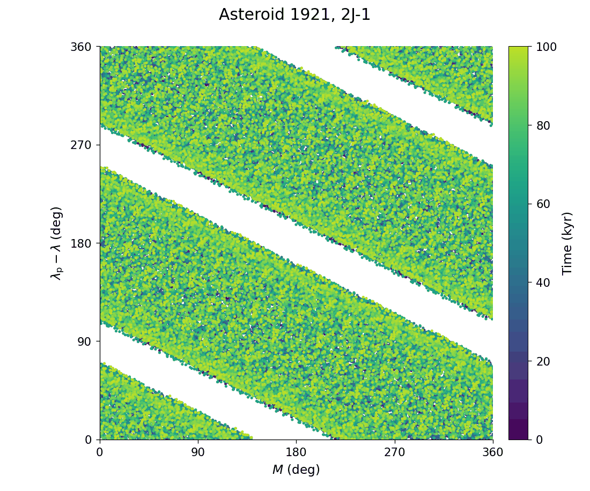
The same plane as panel (m) of the combined figure, for a prograde two-body angle. A libration leaves empty gaps
between slanted bands, as for (1921) Pala in the 2:1 resonance here; a circulation fills the square over time. Unlike (m), this figure is drawn even when the output step
is too coarse: above fair.max_step_fraction (¼) of the orbital period it warns that the strips are aliased.
portrait (MMR)¶
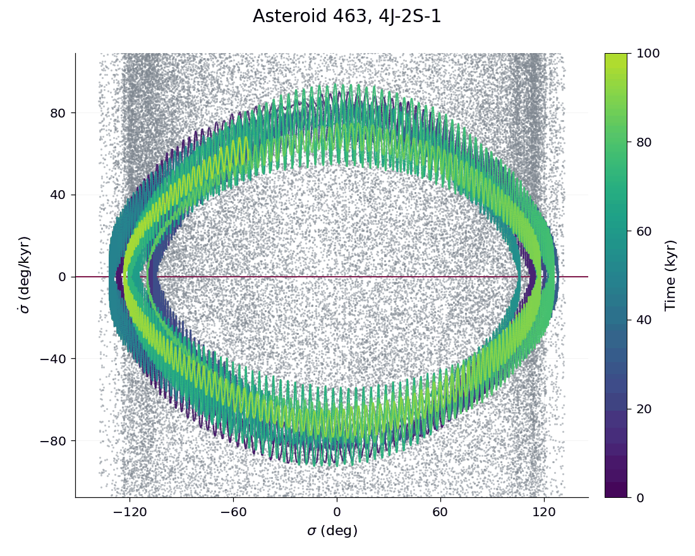
\(\sigma_f\) (shifted by whole turns only) against \(\dot\sigma\) in degrees per display unit, colored by time; gray
dots are the osculating values; red line: \(\dot\sigma = 0\). With portrait.y='axis' the y axis is \(a - a_0\) in
\(10^{-3}\) au: the analysis' own \(a_f\), as in the cycles below, \(a_0\) its median over the focus (the osculating \(a\)
when the analysis' arrays are not held). A libration draws a closed loop. The first and last 1/LIBRATION_FILTER_CUTOFF years (2000 yr by
default) are left out, where the filter is distorted.
cycles (MMR)¶
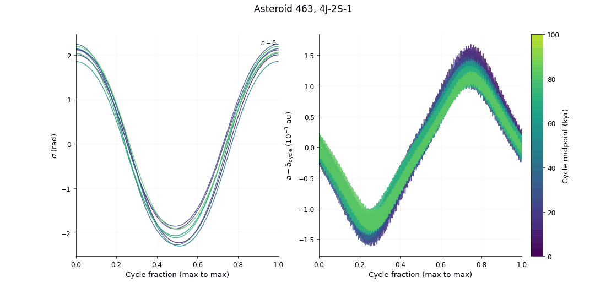
Every cycle of \(\sigma_f\) from one maximum to the next, stretched to [0, 1] and laid on top of each other (left),
and \(a\) over the same cycles minus each cycle's median (right, \(10^{-3}\) au), colored by the cycle's midpoint; \(n\)
is the number of cycles. Cycles that lie on top of each other are a steady libration, and \(a\) swings in step with
\(\sigma\), a quarter cycle apart. A cycle here is a candidate oscillation, not a confirmed libration. The right panel
uses the analysis' own filtered \(a_f\) (at the angle's cutoff, as panel (d) of the combined figure); when the
analysis' arrays are not held (a row not selected for plotting) it uses the osculating \(a\), never the body-level
filter of evolution, which would erase a libration faster than 1/LIBRATION_FILTER_CUTOFF (2000 yr by default).
angle, rate, portrait (secular and Lidov-Kozai)¶
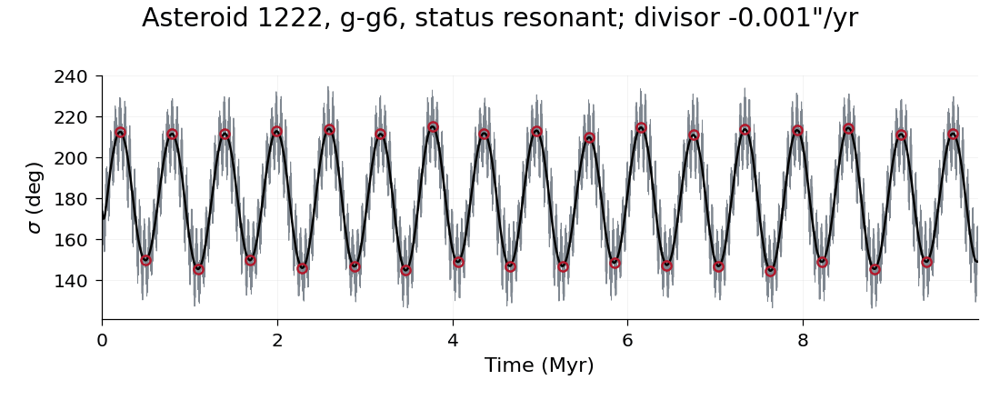
angle: \(\sigma(t)\) in degrees; gray the osculating angle (folded into the band of the black curve when that one
is bounded), black the angle at the scale the verdict rests on (\(P_c\), or the center scale), red circles the turning
points. Read it as panel (a) of the combined figure: (1222) Tina librates through 33 turning points in 10 Myr. A
slow libration needs a long record: (1020) Arcadia in z1 turns back three times in 10 Myr and is resonant
(Gallery); (3701) Purkyne, also in z1 with a period of about 8 Myr, turns
back only twice in 10 Myr and is uncertain (insufficient_time).
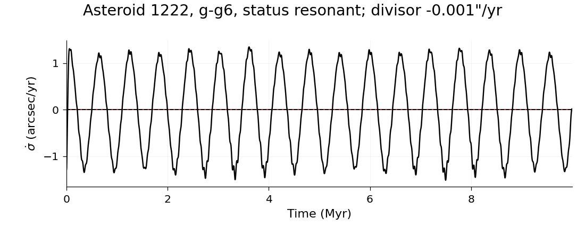
rate: the rate of the black curve in ″/yr (also for Lidov-Kozai, unlike the combined figure), the red line at zero and a dashed line at the mean rate, the "divisor" printed in the title. A libration swings about zero; a drift runs parallel to it.
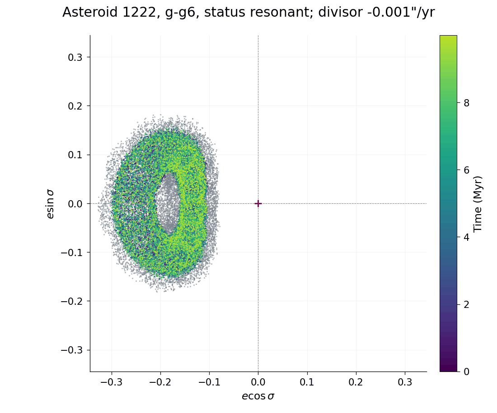
portrait: \((r\cos\sigma, r\sin\sigma)\); gray from the osculating elements, colored by time from the classified angle; red + at the origin. Here \(r\) is \(e\) when the angle contains \(\varpi\), otherwise \(i\) in degrees from the invariable plane (the combined figure's (i) uses \(\sin\frac i2\) instead). Tina's ring sits off the origin: a libration.
ecc_vector¶
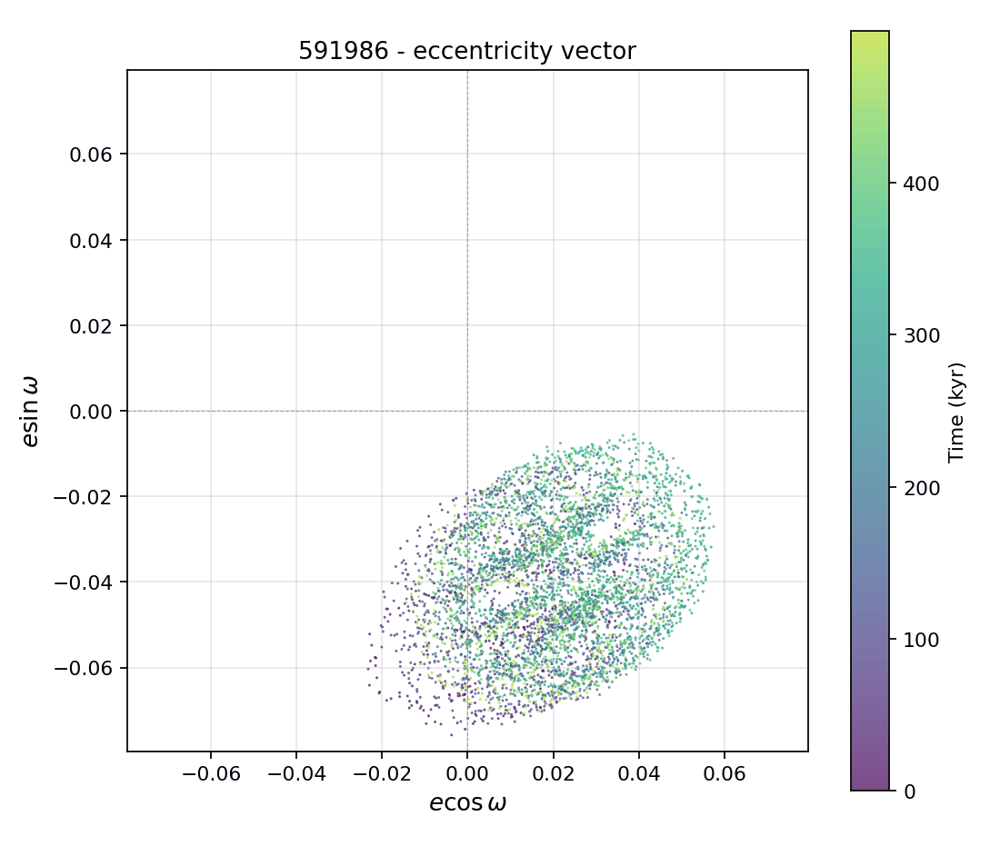
The plane \((k, h) = (e\cos\omega, e\sin\omega)\), colored by time, in a square window centered on the origin; one figure per body. A cloud that does not enclose the origin keeps \(\omega\) bounded whatever the dynamics: it explains why \(\omega\) librates, not whether the libration is a resonance. Here (591986)'s cloud is off the origin, yet its libration is kinematic (below).
The math: forced and free eccentricity
The cloud's center is offset from the origin by \(e_{\rm forced}\) and its radius is about \(e_{\rm free}\), the
columns e_forced and e_free of summary.csv
(forced and free eccentricity).
free_omega (Lidov-Kozai)¶
Three figures from the forced/free split (Free elements), in the frame of the
Lidov-Kozai row (ZLK_ANGLE_FRAME, the invariable plane by default): the osculating ω of the drift figure is the
row's classified angle.
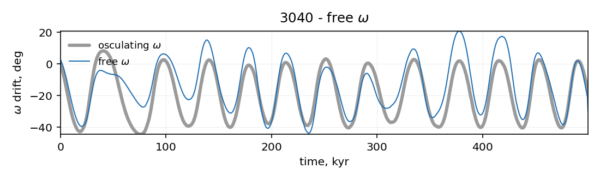
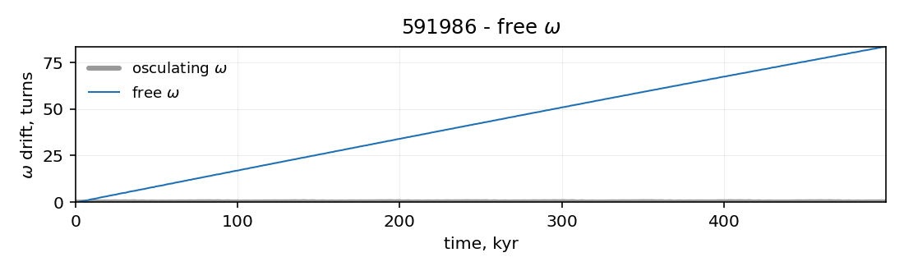
drift: how far \(\omega\) has moved since the start: blue the free \(\omega\), a thick gray line the osculating one, in degrees, or in turns when the drift exceeds three turns. A confined band is a libration, a ramp a circulation. Top: (3040) Kozai, where both stay within a band of some 70°: a Lidov-Kozai libration. Bottom: (591986), where the osculating \(\omega\) stays bounded but the free \(\omega\) winds about 80 turns in 500 kyr: kinematic.
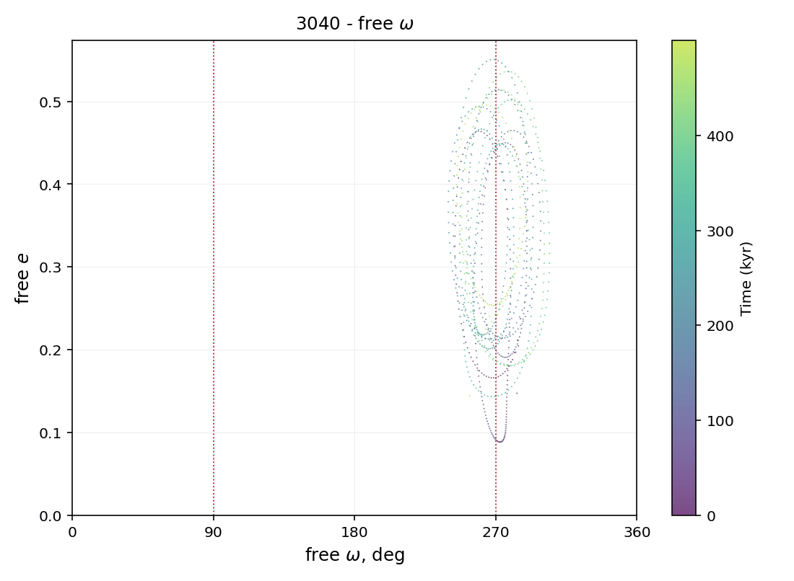
portrait: free \(e\) against free \(\omega\) (0°–360°), colored by time, with red dotted lines at 90° and 270°. A librator draws closed loops around one of them (the center can shift inside a mean-motion resonance); a circulator draws a wave through every \(\omega\).
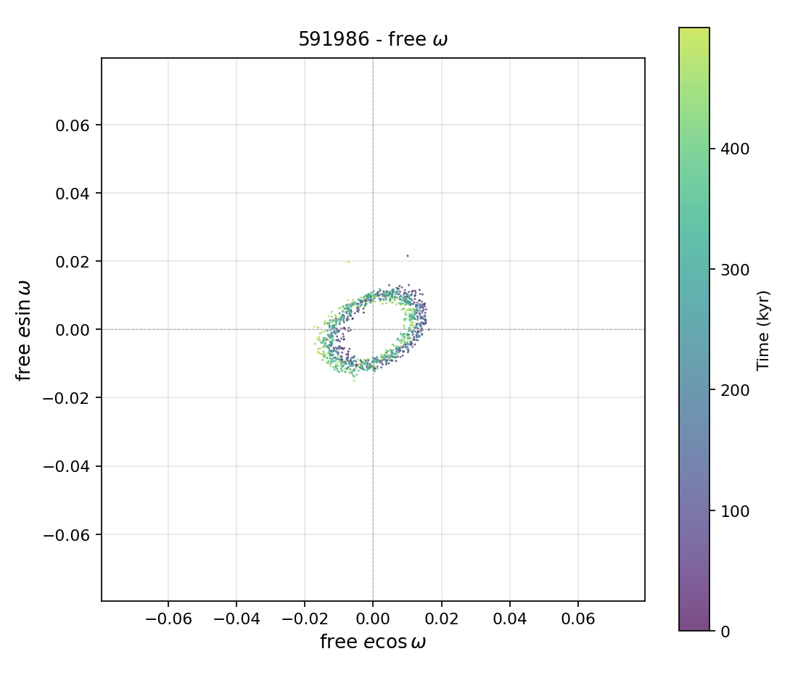
vector: the free eccentricity vector \((e_{\rm free}\cos\omega_{\rm free}, e_{\rm free}\sin\omega_{\rm free})\)
on exactly the window of the osculating ecc_vector figure, so the two can be compared by eye. For (591986) the
free vector circles the origin while the osculating cloud is offset from it: the forced eccentricity, not a
resonance, kept the osculating \(\omega\) bounded.
cross_spectrum¶
Coherence and phase of two series (for example \(e\) and \(i\)) against period on a log axis, and below them the two series band-passed at the decisive line over 16 of its cycles. Everything is cropped to the search band, and the axes pick their own unit (yr, kyr, Myr).
- Coherence panel. Each segmentation level has its own shade of blue: its full spectrum faint, a dotted line at its significance threshold, and a stem at each detected line; open red rings mark up to five strongest lines of each level. A red dashed vertical line marks the decisive line (the strongest at the coarsest valid level; it need not lie in a yellow band).
- Yellow bands mark where to look: every level whose validity band covers that period is above its own threshold (at least two such levels; a level that cannot see the period abstains), and the band holds one of the decisive level's three strongest lines. Agreement alone would not be selective: when the Kozai integral \(\sqrt{1-e^2}\cos i\) is conserved, \(i\) is a smooth function of \(e\) and the two are coherent at every period with power, so a highlight of all agreement would say only that the integral holds.
- Phase panel. Each line is a marker sized by its cross-amplitude, filled when every level agrees; light green bands are the expected phase ± tolerance (180° ± 30° for the exchange of \(e\) and \(i\)).
- Band-passed panel. This one settles it: two curves in antiphase are an exchange, two curves drifting past each other are not.
The method: Cross-spectral coherence. No example image: the benchmark examples are saved without coherence.
clones¶
Three panels for a body integrated with clones (Clones): (a) the angle (0°–360°) of every clone,
colored by its status, the nominal orbit in black; (b) each clone's status against its initial \(a\) (minus the
nominal's), the nominal a black ★, with the catalog resonant axis \(a_{\rm res}\) of an MMR (dotted, a_res
(catalog): from the mean motions, not moved into the osculating frame of the x axis) and \(a_{\rm res}\) ± the
median half-width of the clones' episodes (blue dashed); (c) the share of each status
with its Wilson 95 % interval, ★ at the nominal's status (over the bound draws; when more than CLONES_MAX_INVALID
of the draws are no bound orbit, (c) draws no bar and says 'no shares', and the title says so too). The title gives the number of clones, the source of the
orbit solution, its epoch and the most common status. No example image: drawing it needs an integration of the
clones.
What to look at first¶
Start from the plaque, then check the panels the verdict rests on. The Gallery has a figure for each case below.
- resonant (two-body, three-body): in (a) the fills cover the record from edge to edge; in (c) the line changes sign at each turning point and stays near its episode's blue dashed limits (not necessarily ±1, and only roughly for a well that is not a cosine); in (h) the dots lie below 1; (k) and (l) show closed loops around the +; (e) shows high \(R^2\).
- transient (capture and release, after a jump): fills in part of (a) only; circulation or a drift between them; hatched fills and jump lines when a jump of \(a\) ended the libration; the σ line of Key facts says how the record ends.
- a subresonance (example): in (j) a member's line is flat while the catalog angle wanders.
- near_separatrix (example): no accepted episode, but the angle stalls: ○ slips on the zero line of (c), or revolutions in (h) close to the separatrix zone (near the separatrix).
- non_resonant, circulation (example): the center in (i) runs a full turn one way (shaded); the recurrence figure stays light away from its diagonal.
- non_resonant with a libration (kinematic,
induced): the angle librates in (a) (its episodes faint,
cand: the status does not count them), but in (j) \(\sigma\) follows \(p\varpi\) (kinematic) or the owner's purple line is the flat one (induced); the header readsepisodes about X° (not this resonance). - an alias (example): the red ALIAS note in (b), and the portraits crossed out.
- uncertain (too short, an unexplained drift):
the line
Needed: …under Why and the action chip say what is missing (a longer record, a finer step) and how long to integrate. - secular (ν6, z1): read (a) with the turning-point rule above and (i), (k), (l) for a ring off the origin.
- Lidov-Kozai (confirmed, kinematic): in (g) a free \(\omega\) that winds points to kinematic, a confined one supports the libration; the gate's outcome in the right column decides when it gives one, else the angle's shape does. An offset eccentricity-vector cloud alone proves nothing.